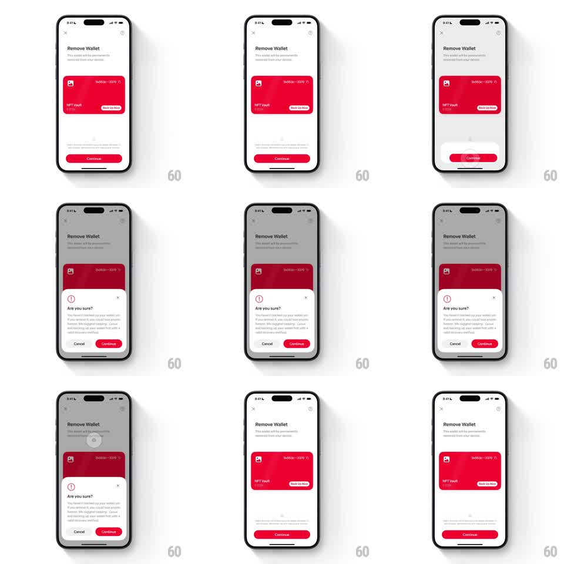

Media
Frame-by-frame

Rebuild this interaction 1:1: Family's remove-wallet confirmation - on the light "Remove Wallet" screen with its red NFT Vault card, tapping the red Continue morphs the button into an "Are you sure?" bottom sheet with Cancel / Continue actions; canceling collapses the sheet back into the original button seamlessly.

Rebuild this interaction 1:1: Family's remove-wallet confirmation - on the light "Remove Wallet" screen with its red NFT Vault card, tapping the red Continue morphs the button into an "Are you sure?" bottom sheet with Cancel / Continue actions; canceling collapses the sheet back into the original button seamlessly.
## Integration
Integration: stack-agnostic spec - springs given as stiffness/damping, timed motions as duration + curve; map every value to your framework and animation library of choice.
## Scene
Light "Remove Wallet" screen: subcopy "This wallet will be permanently removed from your device", a red wallet card ("0x553c...3370", "NFT Vault", "1 ETH", "Back Up Now" tag), and a red "Continue" pill at the bottom. The sheet: warning icon, "Are you sure?", explainer text, X close, and a button pair - light "Cancel" and red "Continue".
## Motion spec
Pattern: button-to-sheet morph with reversible collapse.
- Tap Continue: the red pill expands upward into the sheet (height grows, corner radius 28 -> 20pt, spring ~300/18), the screen dimming (scrim 40%) as the sheet body fades in (warning icon popping at 100ms, text at 160ms).
- The red Continue persists as the sheet's right button - same red, same weight - while "Cancel" materializes beside it (fade + scale 0.9 -> 1, 200ms).
- Tap Cancel or X: the sheet collapses back into the red pill (reverse spring), the scrim lifting as the button settles with a small bounce (scale 1.04 -> 1, spring ~340/16).
- Tap the sheet's Continue: the sheet slides down fully (250ms) and the flow proceeds.
## Calibration
- Red carries the danger meaning end to end - the morph keeps the color continuous.
- The expansion reads as the button opening up, not a new element arriving.
## Reduced motion
Button and sheet crossfade (200ms) with a 40pt slide.
## Don't miss
- The wallet card stays fully visible above the sheet - the thing being deleted remains in view.
- The warning icon is a thin-line alert circle, matching the app's quiet tone despite the red.